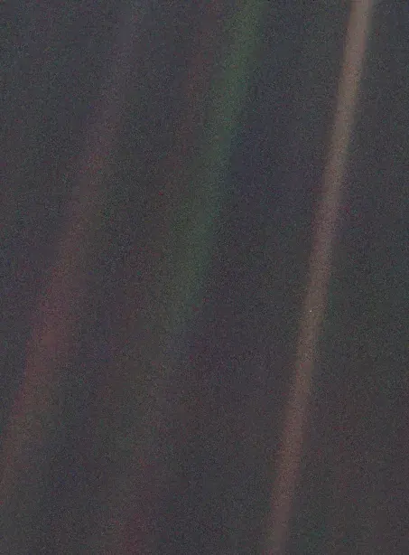
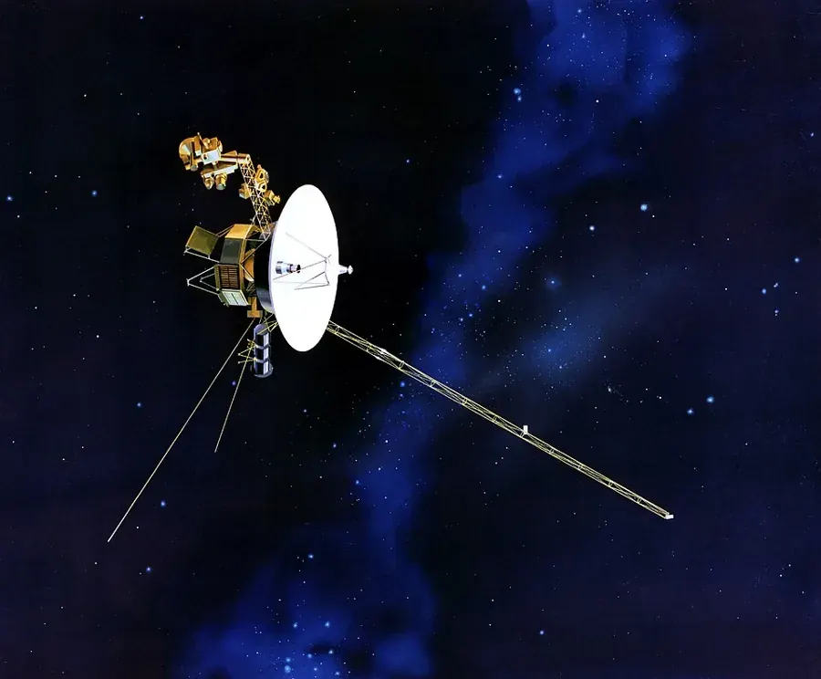

← Blog · 19 November 2026 · 9 min read
Voyager 1 is now one light-day from Earth: what that really means

NASA/JPL · Public domain
On 18 November 2026, at about 10:16 UTC, NASA’s Voyager 1 became the first object people have ever made to reach one light-day from Earth. Light, the fastest thing there is, now needs a whole day to cross the gap between us and a 49-year-old probe the size of a small car. A “hello” sent from Earth today arrives tomorrow.
The distance is about 25.9 billion km. Here is what that number really means, how Voyager 1 got so far, and what happens to it next.
How far is one light-day?
Light travels 299,792.458 km every second. In one day of 86,400 seconds that adds up to 25,902,068,371 km, or about 173 times the distance from the Earth to the Sun (one astronomical unit, AU). That is more than four times as far as Pluto’s average distance from the Sun.
It helps to see it as travel time for light:
| From Earth to… | Light takes |
|---|---|
| The Moon | 1.3 seconds |
| The Sun | 8 minutes 20 seconds |
| Neptune (average) | about 4 hours |
| Pluto (average) | about 5½ hours |
| Voyager 1, today | 24 hours |
| Proxima Centauri, the nearest star | 4 years 3 months |
So the most distant thing humanity has ever sent out is still only one light-day away, while the nearest star is about 1,550 light-days away. At Voyager 1’s speed, the trip to Proxima Centauri would take about 75,000 years.
Why a message takes a day each way
Voyager 1 talks to Earth by radio, and radio waves are light. Nothing can carry a signal faster, so every command now spends 24 hours on the way out, and every answer spends another 24 hours coming back. Asking the spacecraft one question and hearing the reply takes two days. When something breaks, engineers plan each step days in advance and wait.
The signal is also astonishingly faint. Voyager 1’s transmitter has about 23 watts, roughly a fridge light bulb. By the time that beam has spread across 25.9 billion km, the 70-metre dishes of NASA’s Deep Space Network catch only a few times 10⁻¹⁹ watts, less than a billion-billionth of a watt. It arrives at 160 bits per second, slower than a 1990s dial-up modem.

NASA/JPL · Public domain
Why its distance from Earth wobbles
Voyager 1 moves away from the Sun at about 17 km every second, close to 61,000 km/h, about 3.6 times the Earth–Sun distance every year. But the Earth races round the Sun at about 30 km/s. For a few months each year the Earth is moving towards Voyager faster than Voyager moves away, so the distance between them actually shrinks a little. Then the Earth swings round and the gap grows again. Overall it keeps getting bigger, and Voyager 1 is not expected to come back inside one light-day.
49 years in nine moments
- 5 September 1977: Launch from Cape Canaveral, 16 days after its twin Voyager 2. It is called Voyager 1 because its faster path reaches Jupiter first.
- 5 March 1979: Closest pass of Jupiter. Its photos show the first active volcanoes ever seen beyond Earth, on the moon Io.
- 12 November 1980: Saturn and a close pass of its moon Titan. That pass bends its path up and out of the plane of the planets for good.
- 14 February 1990: From about 6 billion km it turns round and takes the “Pale Blue Dot”: Earth as a speck in a ray of sunlight. Then its cameras are switched off to save power.
- 17 February 1998: It passes Pioneer 10 and becomes the most distant object people have ever made.
- December 2004: It crosses the termination shock, where the wind of particles from the Sun suddenly slows down, about 94 times the Earth–Sun distance out.
- 25 August 2012: It crosses the heliopause, the edge of the Sun’s bubble, and becomes the first spacecraft in interstellar space.
- November 2023 – June 2024: A failed memory chip turns its messages into nonsense. Engineers, working with two-day replies, move the code around the broken chip and get science data back.
- 18 November 2026: One light-day from Earth, 49 years, 2 months and 13 days after launch.
Is Voyager 1 still working?
Yes, but it is running on very little. Its electricity comes from the heat of decaying plutonium-238, and the supply drops by about 4 watts every year. To keep the probe warm enough and its antenna pointed at Earth, engineers keep switching things off. It launched with ten science instruments; only two still work, one that measures magnetic fields and one that listens to waves in the thin gas of interstellar space.
In April 2026 the team switched off the Low-energy Charged Particles instrument to save power. In early September they made a risky swap nicknamed the “Big Bang”: three devices were turned off and replaced with lower-power ones in one go, after the same swap worked on Voyager 2. On 18 to 20 October contact was lost for about 48 hours until the probe switched to backup thrusters by itself.
And just before the milestone, on 14 November 2026, Voyager 1 started sending only a plain carrier signal, with no science or engineering data. NASA said engineers were analysing the problem and would confirm the light-day from the carrier signal and the known path of the spacecraft. Something similar happened in 2023 and took months to fix, so this may take weeks or longer.
What happens next
The team’s near goal is the 50th anniversary of the launch on 5 September 2027. In December 2025 mission manager Suzanne Dodd said she felt confident at least one of the two Voyagers could keep going for another two to five years. One day the power will be too low, the fuel lines may freeze, the antenna will drift off Earth and the probe will fall silent.
That will not stop it. Voyager 1 will keep coasting through the Milky Way at about 17 km/s for millions of years. In about 40,000 years it will pass about 1.6 light-years from the star Gliese 445. Voyager 2, slower and on a different path, should reach one light-day in November 2035, probably long after its last message.
Both carry the Golden Record: a gold-plated copper disc with greetings in 55 languages, music, natural sounds and 115 pictures of life on Earth, in case anyone ever finds them.
See where it is right now
The Spacecraft now page shows Voyager 1, Voyager 2, New Horizons, the James Webb Space Telescope and others, with their distance and signal time for today. To see how the Sun and the whole Solar System move through the galaxy, open How we move through space.
Quick answers
How far is Voyager 1 from Earth?
On 18 November 2026 it reached one light-day: about 25.9 billion km, or 173 times the distance from the Earth to the Sun. It moves about 17 km farther away from the Sun every second.
How long does a signal take to reach Voyager 1?
About a day each way. A command sent today arrives tomorrow, and the reply comes back the day after, so every question takes about two days.
Is Voyager 1 still working?
Yes, but only just. Two of its ten science instruments still work, its power drops by about 4 watts every year, and since 14 November 2026 it has sent only a plain carrier signal without data while engineers look for the cause.
When will Voyager 1 stop working?
Nobody knows the exact date. NASA hopes to reach the 50th anniversary of the launch in September 2027, and the mission manager has said at least one Voyager could keep going for another two to five years. After that the probe goes silent but keeps flying.
Will Voyager 1 reach another star?
Not really. In about 40,000 years it will pass about 1.6 light-years from the star Gliese 445, still far from it. Even the nearest star, Proxima Centauri, would take it about 75,000 years to reach.
Sources: NASA Voyager mission blog (17 April, 29 October and 18 November 2026); EarthSky, 18 November 2026; CNN interview with Suzanne Dodd, December 2025; NASA/JPL Voyager mission facts. The light-day distance and the signal strength are worked out from the speed of light and the size of the antennas.